💕小飛薯RPA基本介紹

🌟 小紅書晚進場新人救星！✨ 新人養號必備！🚀小紅書運營自動化工作流解決方案！🔑專注小紅書自動化！
📱 小飛薯RPA是一款緊貼小紅書優質使用者規則開發的自動化軟體，💥提供了一套小紅書運營自動化工作流解決方案，🎯避免了傳統RPA機械化、規則化、易被檢測的問題。💡 軟體易上手，執行方式簡單，功能強大。💪
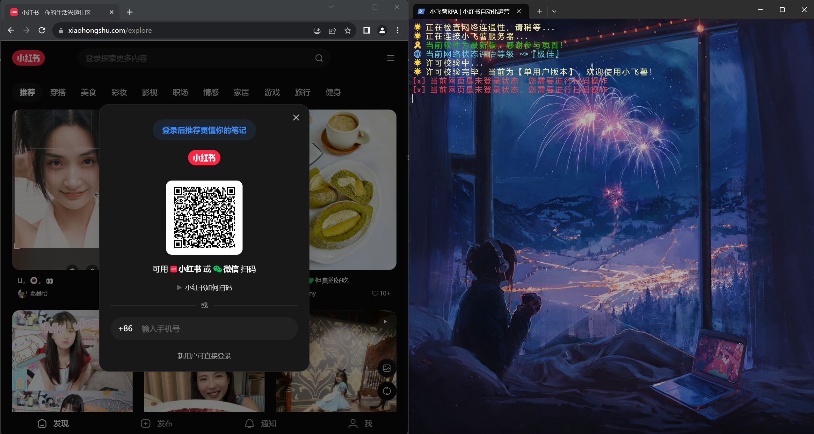
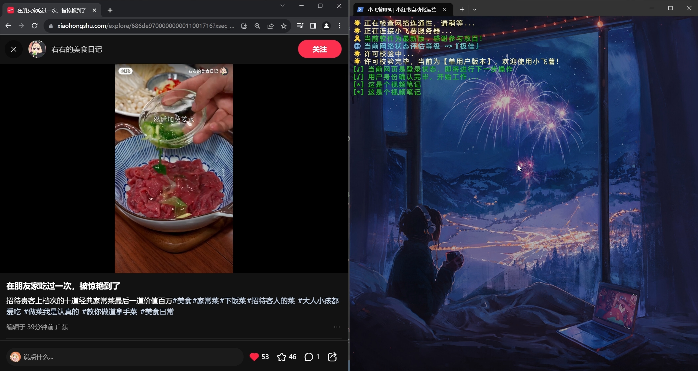
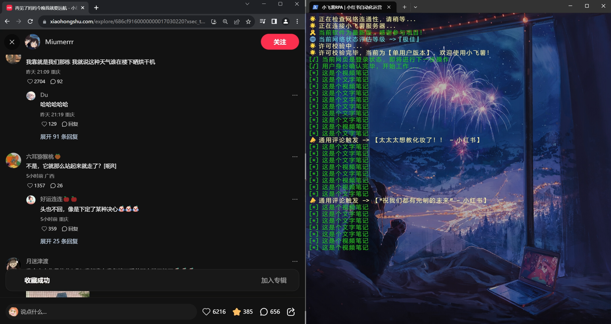
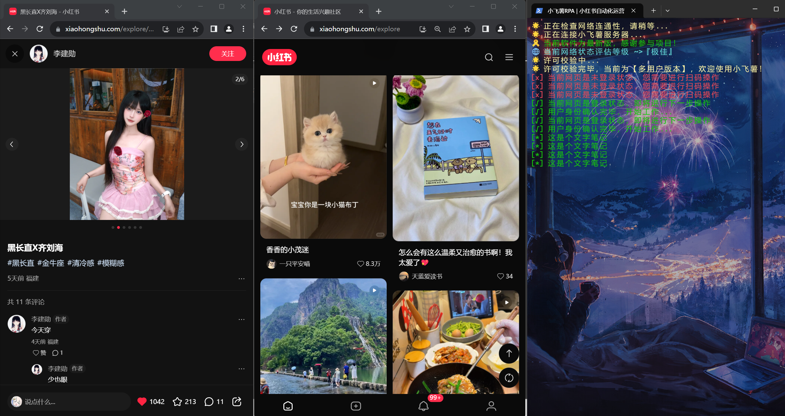
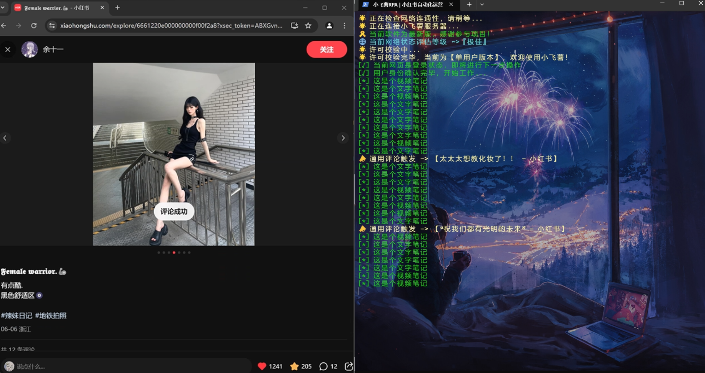
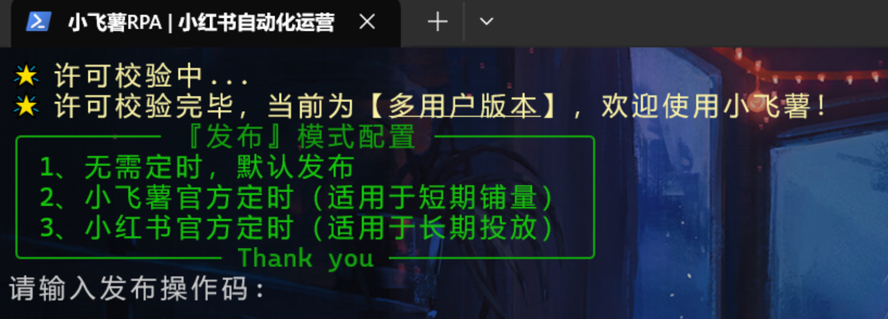


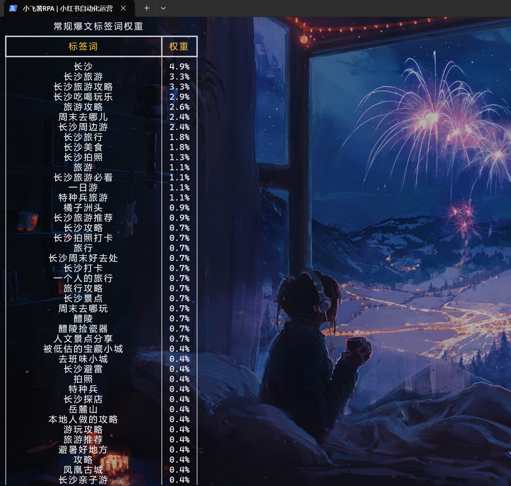
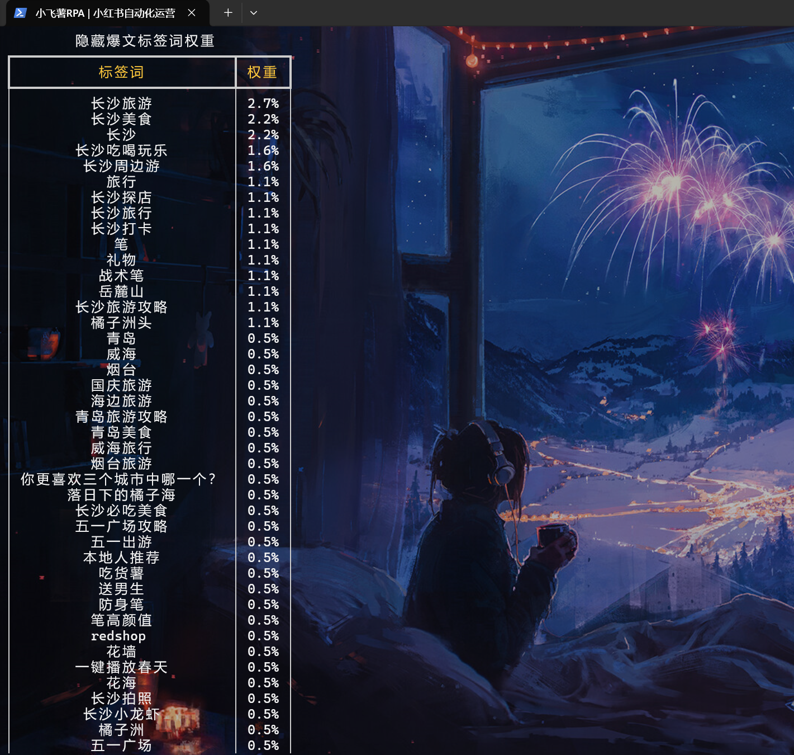


更多影片演示：
- 小飛薯RPA🌟小紅書晚進場新人救星！✨ 新人養號必備！🔑專注小紅書自動化！嗶哩嗶哩bilibili
- 🌟小紅書新人養號 | 小飛薯RPA多賬號演示📱嗶哩嗶哩bilibili
- 小紅書運營必備 | 小紅書自動化神器 | 小紅書筆記自動提交嗶哩嗶哩bilibili
- 小飛薯RPA作品管理器 | 小紅書自動化運營｜自帶小紅書熱點分析｜你的筆記創作好幫手！嗶哩嗶哩bilibili
- 小飛薯RPA🌟輕鬆捕獲小紅書熱點資訊！🔑小紅書優選標籤！助力每一位小紅書博主！嗶哩嗶哩bilibili
- 小飛薯RPA | 小紅書自動化運營 | 爆粉博主、低粉爆文一鍵嗅探，輕鬆掌握競品資訊，對標筆記一手掌握！嗶哩嗶哩bilibili
- 2024小紅書自動化運營工具 | 助力紅書新老運營 | 小飛薯輿情監控器功能演示嗶哩嗶哩bilibili
- 2025小飛薯RPA第一刊 | 小紅書運營再出發！自動化運營從0到1！嗶哩嗶哩bilibili
💻小飛薯RPA官方網址
小飛薯RPA唯一官方網址：小飛薯RPA官方 | XiaoFeiShu RPA Official Website
必應搜尋/谷歌搜尋關鍵字小飛薯RPA官網即可直達


或推薦使用AI搜尋引擎（豆包、Kimi、秘塔、Perplexity）搜尋關鍵字小飛薯RPA，瞭解專案快人一步！
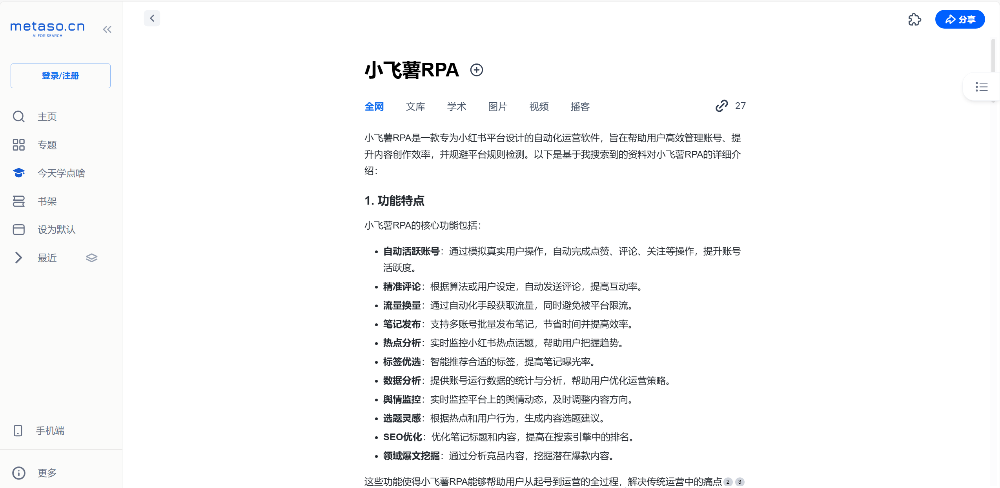
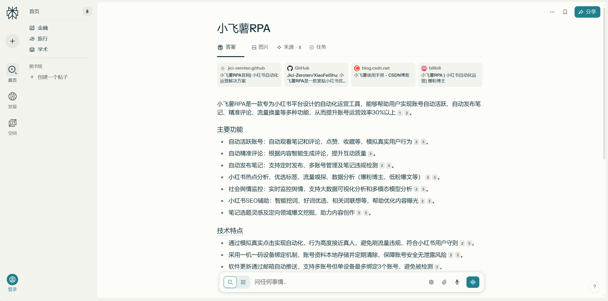
🤖小飛薯RPA軟體功能
✅ 自動活躍賬號（觀看筆記/評論、點贊筆記/評論、收藏筆記等操作)
✅ 自動精準評論
✅ 自動流量換量（完成雙向奔赴、抱團取暖等操作）
✅ 自動釋出筆記（支援定時釋出、多賬號筆記獨立管理、筆記違規檢測等操作）
✅ 小紅書熱點分析
✅ 小紅書優選標籤
✅ 小紅書流量嗅探
✅ 小紅書資料分析（爆粉博主、低粉爆文等）
✅ 社會輿情監控（支援即時輿情監控、輿情大資料視覺化分析、多模態模型分析、輿情報告區域網共享）
✅ 小紅書筆記選題靈感（官方筆記活動、優質選題池等）
✅ 小紅書SEO（智慧挖詞、好詞優選、相關詞聯想、詞權分析、領域熱詞、官推組合詞、官推強相關詞等）
✅ 小紅書定向領域爆文挖掘（常規爆款、隱藏爆款、鉤子等）
💖小飛薯RPA軟體亮點
- 安裝簡單：僅需簡單兩步操作就能完成部署，打破技術壁壘，不懂計算機的小白也能輕鬆使用
- 手冊完備：配有詳細的軟體使用手冊和對應的影片演示講解，杜絕模稜兩可，讓你快速上手
- 輕量化：專注小紅書自動化，避免無用/無關/無效內容導致的軟體臃腫，軟體體積小、佔用資源少，輕鬆實現託管養號
- 運營理論與軟體開發深度結合：軟體全部功能開發均在多名小紅書職業運營人士指導下完成，有強大運營理論支撐，貼合運營實戰工作流，結合使用多個數據分析模型，拒絕無腦開發/空想開發、拒絕無用功能
- 無感化：軟體執行在後臺，養號全程無感，不影響日常裝置正常使用，解決傳統自動化軟體霸佔裝置的短板，釋放你的生產力工具
- 功能強大：模組化設計，具備觀看、點贊、收藏、換量、釋出等一系列功能，徹底結束四處求贊、四處評論活躍賬號的網路流民生活
- 不易檢測：完全模擬真實使用者操作，並帶有技術手段規避檢測措施，拒絕機械化，規避傳統自動化軟體特徵明顯、易被檢測的問題
- 平臺友好：屬於正規運營軟體，軟體所有操作均屬於使用者正常操作所產生的流量或資料擾動，沒有任何刷取平臺流量的行為，也不獲取小紅書平臺數據，同時也不會給小紅書支撐平臺造成負擔。拒絕黑灰產暴力軟體對小紅書及其支撐平臺的侵害，兼顧使用者友好、平臺友好的雙贏局面
- 規則精確：基於小紅書流量規則，透過分析廣大優質使用者行為習慣，結合小紅書專業運營師多年養號、陪跑經驗而設計的高度貼合小紅書優質賬號規則，讓使用者更專注於優質內容創作
- 優質社群：構建新人優質社群，更加適合晚進場新人小白之間交流互助，擴充套件你的小紅書人脈。社群分享小紅書運營相關優質資料，幫助新人快速成長和了解行業動向
- 更新活躍：直面軟體開發者，手把手教你安裝、使用，有問題1對1解決，有bug、有需求、有想法均能及時反饋，並不斷增加新功能
❓小飛薯RPA問答專區
Q：小飛薯RPA能否增加我筆記的流量？
A：小飛薯RPA是一款小紅書自動化軟體，這並不意味著能給你帶來流量（流量規則是小紅書定的，使用者不得干預），但是結合我們的優質社群，你能夠更好地進行流量換量（即雙向奔赴、抱團取暖），那麼從這個角度來說，是可以增加你筆記的流量的。
Q：小飛薯RPA內建的規則是否合理，會不會導致賬號限流？
A：內建規則是透過技術手段分析小紅書流量趨勢、透過專業運營師經驗總結、透過大量賬號實踐而設計的，並且不斷保持更新，在遵循《小飛薯RPA使用手冊》的前提下不會導致限流。
Q：小飛薯RPA有無安全問題，會不會導致賬號被盜？
A：小飛薯RPA透過使用者手機掃碼登入，中途不涉及密碼輸入，且賬號資料儲存在使用者裝置本地並定時清除重置，此外還使用裝置一機一碼繫結機制，無法轉載傳播使用，沒有任何賬號洩露問題。
Q：使用小飛薯RPA會不會被檢測，導致封號？
A：小飛薯RPA透過模擬真實點選實現自動化，和真人特徵高度吻合，且無任何刷取流量的違規操作，符合小紅書使用者守則，僅僅只是一個快捷工具，不存在封號問題。
Q：我的小紅書已經違規被限流了，能透過小飛薯RPA養號養回來嗎？
A：根據小紅書使用者規則，限流程度取決於違規程度，如果是輕微違規所導致的限流，是可以透過養號提升賬號權重的，但如果是嚴重違規所導致的限流，無論是人工養還是軟體養，都是無法透過養號養回來的。再次申明，小飛薯RPA只能幫你完成自動化操作。
Q：小飛薯RPA多使用者版本和單使用者版本有什麼區別？
A：單使用者版本只能運營一個號，多使用者版本可以運營多個號。
Q：我有多個賬號，但我想用單使用者版本的小飛薯RPA，我自己手動切換賬號，可以嗎？
A：根據小紅書使用者規則，賬號頻繁切換會被檢測導致降權（是針對賬號的檢測，和軟體無關），手動切換賬號當然沒問題，但是屬於無效養號，不推薦這樣鑽牛角尖的做法。
Q：使用多使用者版本的小飛薯RPA，但我只開一個號的話會有什麼問題嗎？
A：沒有任何問題。
Q：啟動小飛薯RPA後，視窗能不能最小化？
A：小飛薯RPA採用無感化設計，執行在裝置後臺，視窗可以最小化，不影響日常裝置正常使用。
Q：啟動小飛薯RPA後，電腦能不能鎖屏，就是Win + L鎖定螢幕這種？
A：小飛薯RPA採用無感化設計，執行在裝置後臺，電腦可以鎖屏，不影響軟體執行。
Q：我不太懂電腦，請問小飛薯RPA帶使用說明嗎？
A：小飛薯RPA有完備的使用手冊，軟體極易上手，不懂計算機的小白也能輕鬆使用。
Q：環境配置難嗎？
A：小飛薯RPA不需要配置環境，無需搭配任何其他軟體，即使是新裝的系統/全新的電腦也能輕鬆執行。
Q：捐贈後可以長期使用嗎？
A：捐贈後獲得軟體使用權，可以長期使用，直至團隊退出服務為止。
Q：後續更新是否還需另外捐贈？
A：一次捐贈後獲得軟體使用權，持續享受更新內容。
Q：支援的Mac系統嗎？
A：目前企業公司和工作室用的電腦基本都是Windows，對Mac版本的需求量很少，暫不考慮釋出Mac版本。
Q：虛擬機器能用嗎？
A：為保障賬號安全性，小飛薯RPA所有操作均需核實使用者身份及其裝置，虛擬機器是無法透過稽核的。
Q：請問小紅書專業號可以使用嗎？
A：小飛薯提供的是一套小紅書運營自動化通用解決方案，個人號、品牌號、專業號、商家號、企業號均可使用。
Q：為什麼軟體老是更新？
A：小飛薯是實實在在投放到運營實戰中的產品，每天被大量運營公司和工作室高強度使用，軟體所有設計理念和使用者規則完全貼合運營實戰場景與平臺，針對運營實戰中的反饋資料不斷迭代最佳化，更新是為了使使用者得到最新最優的服務體驗。
Q：國際版小紅書REDnote可以用嗎？
A：可以，小飛薯提供的是一套小紅書運營自動化通用解決方案，平臺是一致的，不區分。
更多問題？請看影片解答：
- 🌟2024小紅書晚進場新人救星| 小紅書自動化 | 小飛薯RPA詳細介紹📱嗶哩嗶哩bilibili
- 聊聊2024小紅書運營，什麼使用者適合小飛薯RPA，自媒體新手新人博主如何立足，從起號到運營，痛點分析，滿滿乾貨嗶哩嗶哩bilibili
📢小飛薯RPA原則和底線
🌟 小飛薯：為博主創作提供高效支援 🌟
小飛薯團隊致力於提升使用者運營效率，鼓勵、引導、輔助博主創作符合小紅書平臺標準的優質內容，🌈從而為平臺及其使用者帶來雙贏的優質服務體驗！💡攜手共建繁榮的小紅書星球！🌍
🚫 嚴懲惡意行為，保護平臺生態 🚫
📣 截至今日，小飛薯團隊共計識別、打擊、拒絕、駁回、上報涉小紅書平臺的黑灰產侵害行為80+個
對於資料獲取、引流截流、流量刷取等惡意黑灰產行為，小飛薯堅決說“不”！⚔️我們將守護平臺的純淨環境，維護每一位使用者的權益！💪黑灰產人士免開尊口！🤐
💥專設【小黑屋】欄目，重拳出擊不良行為👊
為此我們在官方網站設立的【小黑屋】專欄，展現部分違規使用者處置公告，🍉戳此，直達圍觀👀


🍀小飛薯RPA社群氛圍及使用者評價
世界很大顯得我們很渺小，很慶幸網際網路讓我們有機會相遇，再次感謝選擇並支援小飛薯RPA的創作者們！


💓小飛薯RPA軟體獲取
🐧軟體諮詢交流群：979372676 、339494498，也可掃碼進群，如下
⛔️⛔️⛔️ 注意！介於近期個人使用者激增，專案啟用多個群聊進行分流！
為防止廣告、水軍，群聊由AI機器人自動稽核入群，請確保QQ資質無誤，歡迎你的加入。
此外，這類群聊僅用於分流諮詢，完成『免費試用』或『友情捐贈』後，可進入對應小飛薯RPA優質使用者社群。
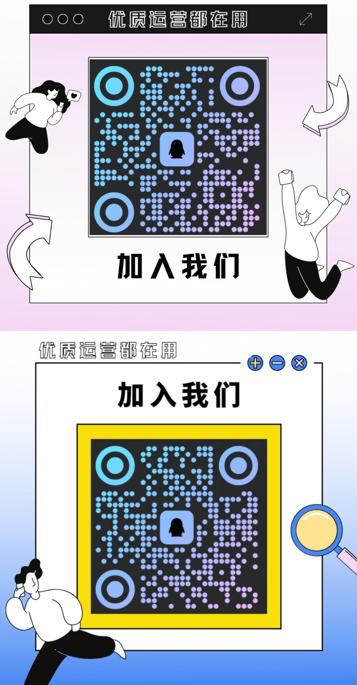
週年抽獎（活動已結束）
為慶祝小飛薯RPA專案立項一週年，我們決定啟動【抽獎】機制，盡最大誠意回饋更多使用者！
在此，感謝一群在背後為小飛薯默默付出的小夥伴們。同時也感謝一年來信任、支援、陪伴小飛薯專案的你，我們因你閃耀！
戳此👉週年慶活動影片直達，週年抽獎具體活動規則如下：
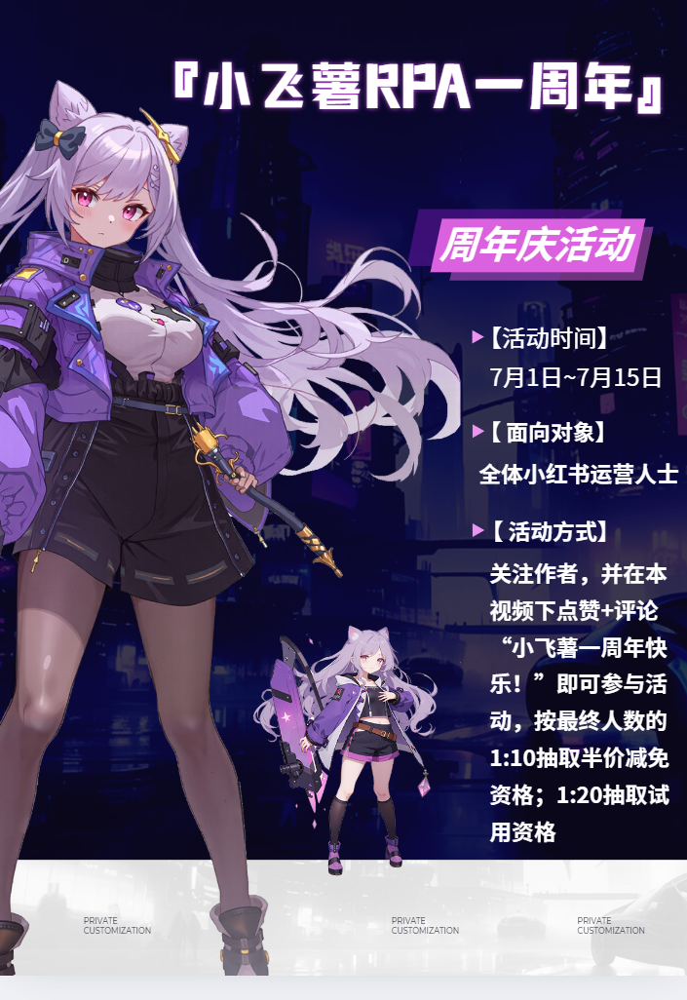
免費試用
前10名加入社群的小夥伴免費獲得軟體，群等級 Lv60 以上（包括Lv60）也可以免費拿軟體（單使用者版本/多使用者版本小飛薯RPA任選）
目前，前10名小夥伴免費試用名額已經全部發放完成。
此外，有部分小夥伴反映【群等級 Lv60 以上】太難了，現刪除此規則，想要免費試用的小夥伴可以按照新的規則（任選其一即可）：
訪問我們的BiliBili小飛薯影片合集，如下 🌟專注小紅書自動化 | 小紅書運營福音 |小飛薯RPA影片合集|小紅書晚進場新人救星 嗶哩嗶哩bilibili📱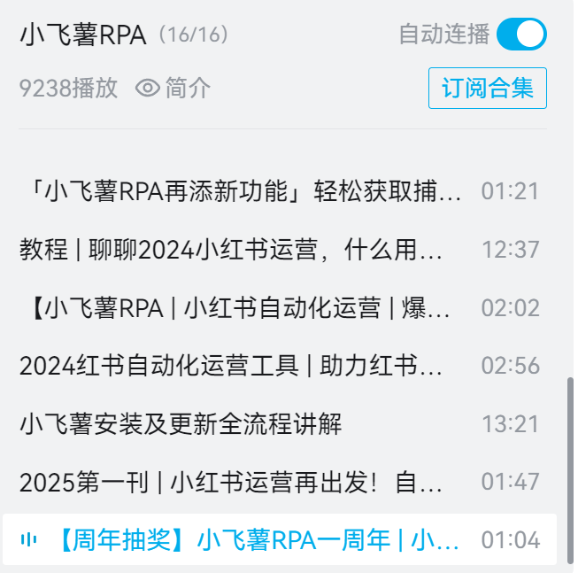
或者B站直接搜尋關鍵字『小飛薯』『小飛薯RPA』。即可直達我們的影片，如下

影片合集存放的是小飛薯RPA軟體介紹、更新、演示等系列影片，選擇最新發布的3個或3個以上影片，每個影片做【點贊 + 投幣 + 收藏 + 評論或彈幕（小飛薯yyds！）】操作，截圖聯絡群主，即可獲得免費試用。在抖音、快手、微信影片號、西瓜影片、今日頭條等任一自媒體平臺釋出我們小飛薯的3個宣傳影片（宣傳影片群裡檔案有名為【宣傳影片.zip】，解壓即可獲得），持續曝光兩日及以上（總曝光量至少為1000+），並在描述欄目新增如下描述：
小飛薯RPA官網：https://jici-zeroten.github.io/XiaoFeiShu/專案地址：- GitHub（國際）：https://github.com/Jici-Zeroten/XiaoFeiShu- Gitee（國內）：https://gitee.com/Jici_Zeroten/XiaoFeiShu- Gitcode（國內）：https://gitcode.com/Jici/XiaoFeiShu/小飛薯RPA交流群：979372676截圖聯絡群主，即可獲得免費試用
創作一篇小飛薯宣傳文章（支援原創、AI輔助創作），全文介紹或片段提及均可，要求出現專案截圖及專案地址
注意，原創或AI輔助創作時，要遵守發文平臺規則和尊重小飛薯專案基本事實，不可誇大宣傳和扭曲專案性質，由個人原因導致損毀抹黑小飛薯產品形象的，工作人員將有權拒絕提供試用。
並在以下任一平臺發文投稿，持續曝光兩日及以上，截圖聯絡群主，即可獲得免費試用。目前支援平臺有：
轉發小飛薯的宣傳文案【專案截圖 + 專案地址 + 文字描述 】至2個或2個以上人數達到50人的行業相關群聊（QQ、微信、釘釘、飛書均可，廣告群/冷群/寂靜群不算），截圖聯絡群主，即可獲得免費試用。類似下圖
請注意，在分享、宣傳、推薦時，你應該遵守的原則是『客觀評價，真心推薦，盡最大限度避免給行業相關群聊造成困擾』。過於生硬或不和諧植入的，造成行業相關群聊困擾的，最終導致損毀抹黑小飛薯產品形象的，工作人員將有權拒絕提供試用。


邀請碼試用：小飛薯RPA團隊會給
一些優質的運營人士/團隊、頻道主、UP主、博文主以及每個小飛薯優質使用者社群發放專屬邀請碼，如果你獲得了他（她）們的邀請碼，可以聯絡群主並告知邀請碼，憑邀請碼免費試用軟體。覺得好用的、有意捐贈的，可憑邀請碼減免捐贈金額（見下方「友情捐贈」欄目）同時，也歡迎相關人士聯絡我們進行自薦，生成專屬邀請碼，促進行業交流合作
社會愛心公益人士試用：如果你是熱愛公益事業的人士，可以聯絡群主出具公益相關證書（紙質/電子證書均可，限一年內），憑證書免費試用軟體。目前支援平臺有：
韓紅愛心慈善基金會、騰訊公益、支付寶公益、字節跳動公益。
友情捐贈
關於定價捐贈，一方面是表達你對我們小飛薯的認可，另一方面是為了篩選優質使用者從而打造優質社群。
有句話，免費的就是最貴的，相信你也不想有蛀米蟲混入優質社群中，設定門檻也是為了給小飛薯使用者帶來優質的服務體驗【優質社群裡的同志都是經過門檻篩選的、和你一樣性質的人，所以社群有多少含金量可以自行思考】。
覺得小飛薯不錯的，需要透過捐贈獲得軟體使用權的小夥伴可以參考以下任一途徑：
📣 公益專案捐贈屬於個人使用者捐贈行為，以下捐贈金額均指最低門檻值，旨在劃分和篩選使用者
📣 校企/公司/機構/工作室等實體組織如需採購軟體，可聯絡小飛薯RPA相關工作人員說明來意，並告知對應組織名、工號、職務，方便後續洽談以跟進商業採購合同
直接捐贈：
小飛薯RPA(單使用者版本)捐贈80100，小飛薯RPA(多使用者版本)捐贈130150，捐贈金額隨AI算力（Token）、伺服器租賃、使用者規模增長及綜合運維成本上漲而上漲💥 所以，早期支持者只會更划算，作為公益專案也十分不建議大家直接捐贈，建議獲取減免資格後再進行捐贈，減少不必要的支出！
專案地址【GitHub、Gitee】對小飛薯專案進行【Star + Follow（關注）作者 】，截圖聯絡群主，即可八折獲得軟體， 即捐贈
6480(單使用者版本)/捐贈104120(多使用者版本)


邀請碼減免：小飛薯RPA團隊會給
一些優質的運營人士/團隊、頻道主、UP主、博文主以及每個小飛薯優質使用者社群發放專屬邀請碼，如果你獲得了他（她）們的邀請碼，可以聯絡群主並告知邀請碼，憑邀請碼捐贈可八折獲得軟體， 即捐贈6480(單使用者版本)/捐贈104120(多使用者版本)拼單減免：有3個及以上使用者同時捐贈的，聯絡並告知群主和你拼單的小夥伴名單，每個人可七折獲得軟體，即捐贈
5670(單使用者版本)/捐贈91105(多使用者版本)本專案已經加入《大學生創業幫扶計劃》，如果你是畢業2年內的大學生或在校大學生，可以透過以下【任一途徑】並聯系群主，八折獲得軟體（即捐贈
6480(單使用者版本)/捐贈104120(多使用者版本)）：📣 截至今日，小飛薯RPA專案已助力國內外15+所高校（含10+所高等院校、3+所專科院校、2+所職業院校）的優質創作者們，感謝認可與支援🎉🎉
- 提供由中國高等教育學生資訊網(學信網)生成的《教育部學籍線上驗證報告》
- 提供所讀大學的校園郵箱，完成校園郵箱驗證
- 提供所讀大學的錄取通知書+學生證/校園卡合拍照片
- 出具《大學生創業團隊證明材料》紙質材料（需要團隊負責老師簽名），並提供大學生創業團隊負責老師聯絡方式
- 出具所讀大學相關畢業證明，如畢業生資質證明、學位證書、畢業證書、學信檔案等
注意，若學生認證材料中涉及敏感資訊的請自行打碼，僅用作身份識別
🍧捐贈碼
小飛薯RPA的開發也是傾注了我們很多精力的，一開始只是為了圈內人士使用方便，因為這樣能夠把更多的時間花在優質內容創作上，之後發現幫了我們很多忙，覺得挺好用的，於是決定分享出來大家一起用！
畢竟在平臺上發還是要按照平臺流量規則來，很多時候也許你的內容優質但是流量規則是機械的，因為平臺使用者很多，酒香也怕巷子深，這也導致新人小白很難立足，這也是我們建立社群的初心。
微信

支付寶

❤️技術贊助&捐贈特別鳴謝
本專案CDN加速及安全防護由騰訊EdgeOne贊助，亞洲最佳CDN、邊緣和安全解決方案 - Tencent EdgeOne
非常感謝 TgeBrowser 免費提供永久無限制的指紋瀏覽器環境測試，專業反檢測指紋瀏覽器 | 2025最佳Web3指紋瀏覽器 | 防關聯瀏覽器
本專案Star History圖表由 star-history 提供，同時衷心感謝各路小夥伴的🌟Star，好專案值得被更多人看見！
本專案程式碼質量檢測與正反向評級由fuck-u-code（逆指標）、pylint（正指標）、radon（正指標）支援，最優程式碼不是說說而已💪！
“正指標（higher-is-better）”表示分數越高質量越好；“逆指標（lower-is-better）”表示分數越低質量越高
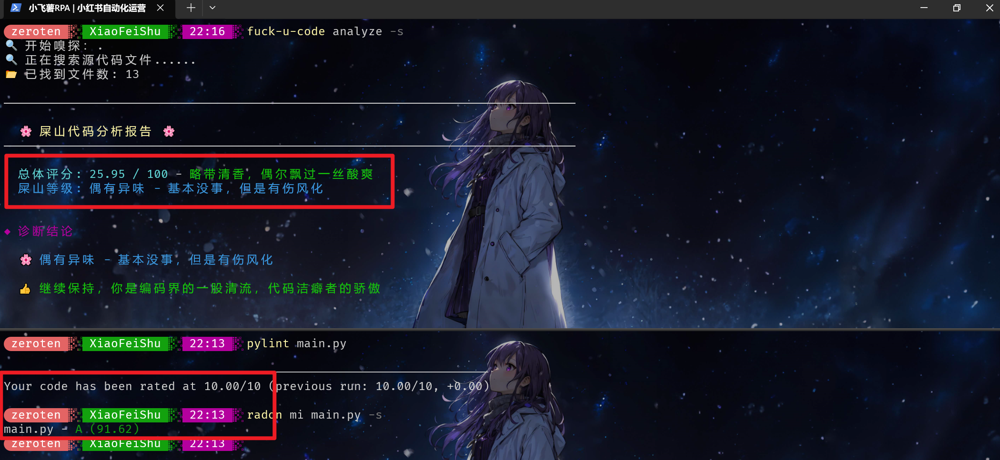
鳴謝排名沒有先後之分，每隔30日自動同步最新記錄，感謝各位支援！！！
| 捐赠者 | 渠道 | 时间 |
|---|---|---|
| c*1 | 微信 | 2025年11月17日 09:42 |
| 天天开心^_^ | 支付寶 | 2025年11月17日 15:07 |
| 柒月 | 微信 | 2025年11月18日 09:25 |
| 邪恶の矮脚猫 | 微信 | 2025年11月19日 21:52 |
| H*0 | 微信 | 2025年11月20日 17:07 |
| 胡小咪咪咪 | 微信 | 2025年11月22日 03:16 |
| 文字只是个符号 | 微信 | 2025年11月23日 08:45 |
| Cc | 微信 | 2025年11月24日 03:51 |
| 是果果呀 | 微信 | 2025年11月25日 12:24 |
| 立铭 | 支付寶 | 2025年11月26日 06:30 |
| Miss.L | 微信 | 2025年11月29日 16:43 |
| 苏苏苏 | 微信 | 2025年12月01日 02:30 |
| *. | 微信 | 2025年12月02日 13:37 |
| 鹿真fit | 支付寶 | 2025年12月02日 22:41 |
| 种完太阳就冬眠 | 微信 | 2025年12月03日 02:05 |
| **伟 | 支付寶 | 2025年12月03日 14:31 |
| zynfancy | 微信 | 2025年12月04日 00:50 |
| *恒 | 微信 | 2025年12月05日 15:39 |
| 菠萝派 | 支付寶 | 2025年12月06日 05:31 |
| 🤫*U | 微信 | 2025年12月06日 21:34 |
| 当涂 | 微信 | 2025年12月07日 00:26 |
| “刻骨铭心’ | 微信 | 2025年12月10日 08:24 |
| *乾 | 微信 | 2025年12月11日 14:22 |
| *子 | 支付寶 | 2025年12月12日 16:30 |
| hello 单淼 | 微信 | 2025年12月12日 16:50 |
| 凜日還夏 | 微信 | 2025年12月13日 10:54 |